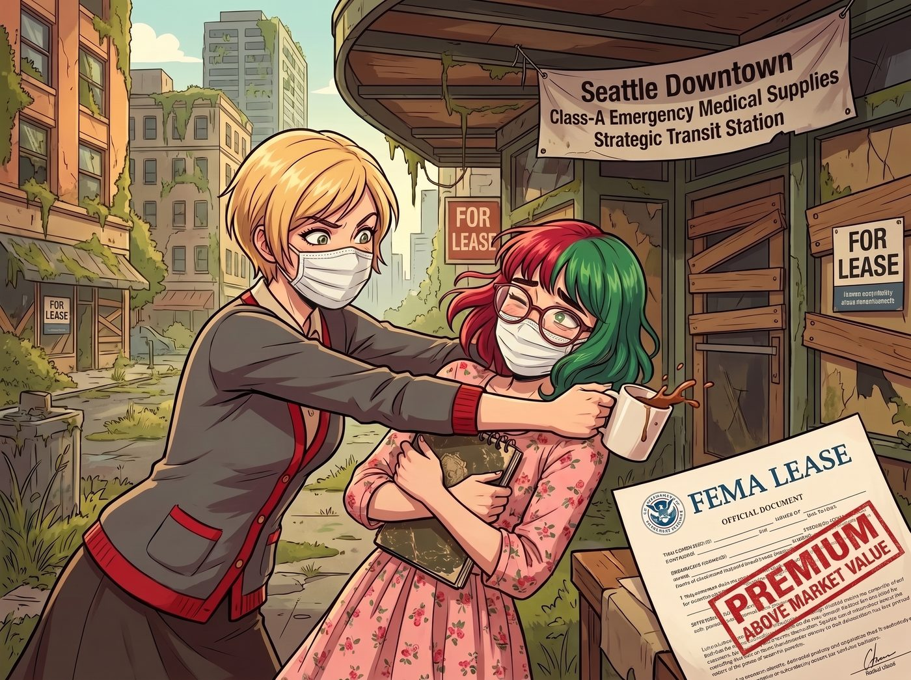
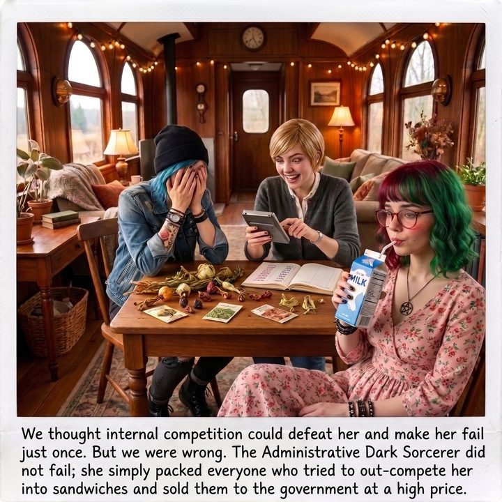

泥潭邊的柵欄


疫情爆發後，Victoria 位於西雅圖派克市場附近的那間黃金商舖，曾經一度陷入絕境。
零售業徹底死透，經紀人每個月只能帶來個位數的看舖客戶，而且對方開出的條件一個比一個離譜——租金砍到疫情前的一折，還要求半年免租期。Victoria 氣得把 Lily 搖到眼鏡都快掉進馬克杯裡，才終於等到了一個轉機：Lily 以家族信託基金會的名義，將這間商舖重新包裝成「西雅圖市中心A級緊急醫療物資戰略中轉站」，成功以高於市價一大截的溢價，跟聯邦緊急事務管理署簽下了兩年期的不可撤銷租約。
那一週，Victoria 幾乎是笑著入睡的。
一、內捲的耳光
然而好景不長。
二號車廂的大螢幕上，一封帶有州衛生局和聯邦緊急事務管理署聯合抬頭的拒絕信，猶如一記響亮的耳光，狠狠抽在了 Victoria 的臉上。
「感謝您的愛國情操，Chase 小姐。然而，目前州政府已收到超過五十份來自西雅圖地區的同等面積空間報價。其中三家華爾街房地產投資信託基金願意以市場價的百分之十五出租其商業地產，僅為換取本年度的稅務沖銷。因此，我們無法接受您百分之一百五十溢價的合約。除非您願意將租金降至市場價的百分之十，並自行承擔水電與安保費用，否則我們將轉向其他供應商……」
Victoria 念完這封郵件，氣得把手裡的骨瓷杯直接砸進了垃圾桶。
「這群見鬼的華爾街吸血鬼！」Victoria 精緻的臉龐扭曲了，「他們寧願流血甩賣，也要跟我搶這筆對政府的生意？！一折出租，還要我自己付電費？這根本不是在做生意，這是在做慈善！我堂堂 Chase 家族的頂級地產，憑什麼要跟他們捲這種白菜價？！」
躺在沙發上的 Chloe 終於等到了她夢寐以求的這一刻。她直接從沙發上彈了起來，狂野地吹了一聲口哨，笑得眼淚都快出來了。
「哈哈哈哈！吃癟了吧！實習生，妳的黑魔法終於踢到鐵板了！」Chloe 走到 Lily 面前，得意洋洋地拍著桌子：「歡迎來到殘酷的資本主義內捲世界！妳以為只有妳聰明？全美國的律師和資本家都在盯著政府這塊肥肉！當所有人都想到了這招時，妳的黃金地段就變成了一堆沒人要的破銅爛鐵！降價吧，大小姐，或者抱著妳的空殼子破產！」
二、停止賣水桶
面對 Chloe 的狂嘲和 Victoria 的崩潰，坐在工作站前的 Lily 連眉毛都沒動一下。她依然安靜地端著那杯熱牛奶，輕輕吹了吹上面的熱氣，然後推了推圓框眼鏡。
「Chloe 學姐，您對內捲的理解非常精準。」Lily 喝了一口牛奶，語氣平靜得像是在講述一個與自己無關的學術案例，「當市場上出現了五十個願意虧本大甩賣的競爭對手時，空間就從稀缺資源變成了廉價的工業廢料。在這種紅海市場裡打價格戰，是毫無尊嚴的農奴行為。」
「那妳還說什麼風涼話？！」Victoria 氣急敗壞，「難道我們就這樣眼睜睜看著那群華爾街的白痴把政府訂單搶走？！」
「當然不。我們不降價，也不升級對抗。」Lily 放下馬克杯，手指在鍵盤上敲擊了幾下：「我剛才已經正式撤回了我們那間商舖的租賃申請。」
「妳瘋了？！」Victoria 尖叫。
「Victoria 學姐，當賣水桶的人太多，利潤被捲到無限趨近於零的時候……」Lily 轉過身，螢幕的藍光照亮了她那雙深不見底的眼睛，「我們就應該停止賣水桶，轉而去向政府賣水桶的安全質量檢驗證書。」
三、行政災難的恐懼
Lily 調出了一份全新起草的、長達兩百頁的複雜商業架構圖。
「想一想，官僚系統最怕什麼？是貴嗎？不，政府印鈔票是沒有痛覺的。他們最怕的是麻煩和責任。」Lily 軟糯的聲音開始在車廂裡編織一張恐怖的行政巨網：「如果州政府貪圖便宜，租下了那五十個華爾街基金的廉價商舖，這意味著什麼？意味著承辦官員需要同時對接五十個不同的房東；需要派人去檢查這五十個地方的通風系統是否符合疫苗冷鏈標準；一旦某個商舖停電導致疫苗報廢，政府還要跟五十個不同的律師團打官司。這對官僚來說，是一場行政災難。」
Lily 敲下回車鍵，一份新的投標書出現在螢幕上：《大西雅圖地區疫苗與醫療物資合規化管理及免責信託網絡》。
「所以，我們不租商舖了。我們轉型為聯邦一級生物資產合規總包商。」Lily 看著目瞪口呆的眾人，微笑著揭曉了最終的黑魔法：
「Victoria 學姐，我剛才以您家族慈善基金會的名義，向那五十家正在瘋狂內捲、急需稅務沖銷的華爾街房地產基金發出了善意收購。我們將以市場價的百分之十，比政府給的還低，把他們手裡的空店鋪全部打包承租下來。」
「然後，我們利用我們之前積累的合規認證經驗，給這五十個廉價店鋪全部套上統一的免責信託防護罩。」
「最後，我們拿著這個整合完畢的、具有最高法律豁免權的無憂物流網絡，重新去找州政府談判。」Lily 推了推眼鏡，鏡片上閃過一絲令人敬畏的寒芒：「我們告訴政府：你們不需要去管理五十個麻煩的房東了。你們只需要跟 Victoria 學姐一個人簽約。我們承擔所有的疫苗儲存法律風險、我們提供統一的合規報表。而代價是——我們要在整體市場底價的基礎上，收取百分之二百五十的合規管理與風險對沖溢價。」
四、泥潭邊的柵欄
車廂裡死一般的寂靜。外面的狂風暴雨還在肆虐，但車廂裡的溫度彷彿已經降到了冰點。
「妳的意思是……」Chloe 拿著啤酒罐的手僵在半空，大腦瘋狂運轉，「妳不僅沒有被那群華爾街的傢伙捲死……妳還趁他們互相殘殺把價格打到最低的時候，把他們的店鋪全包了？然後妳轉手把他們變成了妳的底層打工仔，妳自己當了唯一對接政府的中間商？！」
「這叫將內捲轉化為供應鏈優勢，Chloe 學姐。」Lily 乖巧地雙手交疊在膝蓋上：「當一群人在泥潭裡互相撕咬時，不要加入他們。妳只需要站在岸邊，把泥潭周圍的柵欄買下來，然後向想要看戲的政府收門票。」
Victoria 徹底傻了。她呆呆地看著那份預計將為她帶來數千萬美元合規管理費的總包合約。前十分鐘，她還以為自己是個即將在內捲中破產的失敗房東；現在，她成了整個西雅圖市中心抗疫物流網路的地下女王。
「Lily……」Victoria 嚥了一口唾沫，聲音微微發抖，那是極度震撼與狂喜交織的顫音，「妳到底是什麼構造的？妳的血液裡流的都是冰水和試算表代碼嗎？」
「我只是個盡職的守衛者，學姐。保護客戶的資產不被市場的惡意內捲傷害，是我的分內之事。」Lily 溫柔地笑了。
沙發上，Max 默默地舉起了寶麗來相機。她看著鏡頭裡那個因為反向收割而徹底懷疑人生的 Chloe，以及已經開始拿著計算機瘋狂按數字、笑得合不攏嘴的 Victoria，最後將焦點對準了那個正在喝牛奶的十九歲魔王。
「喀嚓。」
相紙吐出。Max 在背後用發抖的手寫下：
『我們以為內捲能打敗她，讓她吃一次癟。但我們錯了。行政黑魔法師沒有吃癟，她只是把所有企圖捲死她的人，全部打包做成了三明治，然後高價賣給了政府。』